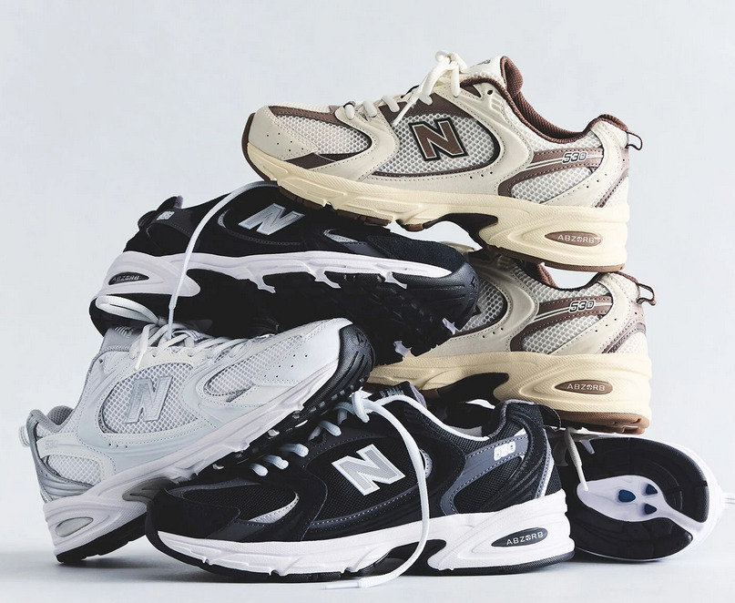
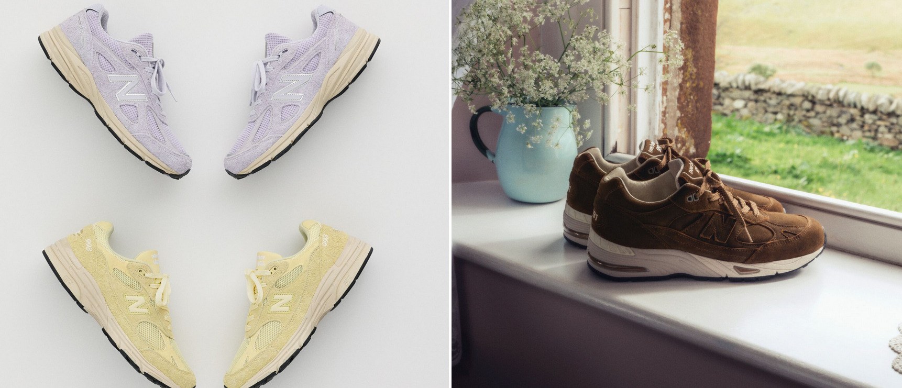
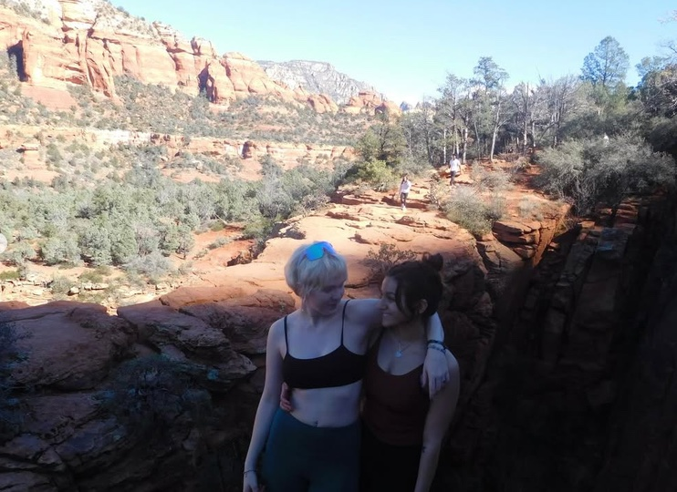
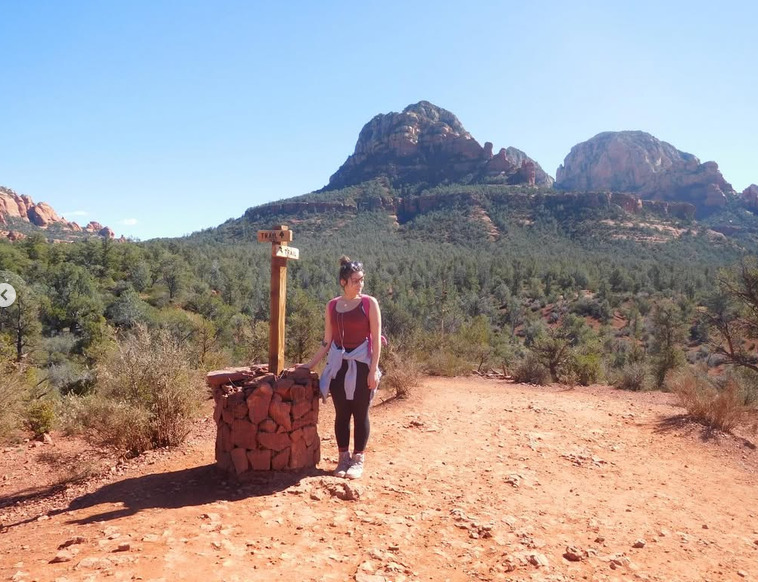

FOOTWEAR
The “anchor” of Nike’s sales and foundation of the company. Footwear accounts for about 66% of Nike’s sales (NIKE, Inc., 2026).
MARKET / CULTURE / PEOPLE / MOVEMENT
BUILT BY MOVEMENT. BOUND BY COMMUNITY.
Nike is placed right in the middle of the market, most of its consumers falling in the middle to upper middle class range.
Some of Nike’s prime competitors such as Hoka and On fall into a more premium segment of the market, which will be used to differentiate Nike and emphasize its care for all athletes and customers.
The “anchor” of Nike’s sales and foundation of the company. Footwear accounts for about 66% of Nike’s sales (NIKE, Inc., 2026).
Accounts for 28% of Nike’s annual revenue. The new corporate priority is women’s apparel, which has started to be taken over by New Balance and Adidas (NIKE, Inc., 2026).
Nike consideration jumps to 55.4% among the target market of Gen Z audiences aged 18–26 (Dsouza, 2026).
Nike is currently ranked number one in brand consideration among the target market and continues to dominate the athletic and apparel industries (Dsouza, 2026).
RESEARCH_02 / COMPETITIVE SQUEEZE
While Nike continues to dominate retail environments, competitors are fast approaching. What Nike currently lacks is the appeal to lifestyle aesthetics and connecting with Gen Z audiences “personally”.


New Balance’s retro aesthetic, natural positioning and lighting highly appeals to our target market (New Balance, 2026).
New Balance is prioritizing women’s styles and female-forward marketing on its website (New Balance, 2026).


NB's massive month-long campaign successfully blended lifestyle fashion, self-expression, and sport by collaborating with influential young creators like Aminé, Cameron Brink, and Coco Gauff (New Balance, 2025).
This strategy helped New Balance climb to the #3 favorite footwear brand among upper-income teens by offering “wearable everyday sneakers” that emphasize individuality over hyper-competitive elite specs (Ruben, 2024).


On Running successfully captured Gen Z lifestyle and non-elite runner mindshare by relinquishing creative control to Zendaya for a Spikes Jonze-directed brand film (On, 2024).
The creative partnership generated over 15 million Instagram views and presented On as a culturally relevant lifestyle label rather than a narrow sports brand (On, 2024).

Nike's most successful 2025 social ad focused on local city identity, music, and shared cultural celebration instead of direct product promotion (The One Club for Creativity, 2026).
The Reel achieved 41 million views and 600,000+ likes on Instagram, demonstrating the strength of “participation in a cultural moment” rather than a hard product pitch (The One Club for Creativity, 2026).
RESEARCH_03 / TARGET MARKET
For advertisement and target market examples, I am using images from Amira’s and my hiking trip, taken on her digital camera. Despite being amateurly taken, it has a beautiful color palette, emphasizes fun fitness, and of course how fitness can create community.


MINDSET + VALUES
Prioritizes human connection and common goals. Views community as the most effective way to overcome challenges both personal and global.
MOTIVATIONS
Desires movement that supports mental wellness, post-class stress recovery, and genuine social interactions.
LIFESTYLE + BEHAVIOR
Tries to move at least once a day. PR-based exercise is not helpful for her or her friends. Jogs, campus gyms, and yoga help grow personal connections and prioritize mental wellness over physical aesthetics.
TECHNOGRAPHICS
Tapped into social media and frequently uses apps such as Instagram or TikTok for sources of news and style updates.
Nike’s most successful campaigns of the last five years, such as “LA loves a sequel”, stemmed from community involvement and excitement about being involved in a common goal (The One Club for Creativity, 2026).
Nike’s current biggest competitor, New Balance, has gained exponential popularity due to its retro “dad shoe” and connection with young audiences through trending aesthetics (Ruben, 2024; Ryan, 2024).
Current consumers are incredibly skeptical of staged diversity and value raw and unfiltered advertising. It signals transparency and insight into what consumers truly want and are looking for in their purchases (OpenAI, 2026).
Video posts on Instagram continuously outperform curated grid posts. Showcasing holistic views on athleticism and videos of athletes further instills the idea of authenticity (OpenAI, 2026).
RESEARCH_05 / TREND RESEARCH ARTIFACTS
Competitors like On (collaborating with Zendaya) and New Balance (via Grey Days creator campaigns) are capturing young mindshare by prioritizing lifestyle and retro aesthetics (On, 2024; New Balance, 2025).
Gen Z shares social content when it feels like a native piece of culture, not a traditional sales pitch.
In our Milestone 3 social visuals, Nike apparel and footwear will appear naturally as part of a styling choice within real-world environments.
Products will function as a subtle badge of community belonging, a common connection.
Modern fitness definitions include cognitive readiness, mindfulness, and sensory recovery.
Nike has identified this “mind-body connection” as the next frontier of sport performance, formally launching its own “Mind Science Department” (NIKE, Inc., 2025).
In our campaign visuals and content copy, “movement” is defined holistically.
We will feature everyday athletes in restful, post-workout recovery states.
Massive sports advertising is moving away from highlighting hyper-competitive professional achievement.
The focus is on everyday human connection, local run clubs, and casual fitness communities (Marketing Dive, 2026).
My campaign directly avoids intimidating, high-pressure sports tropes.
Visually, we will showcase local communities, slow-paced run clubs, and everyday neighborhood movement.
Aligns with Nike’s new inclusivity movement.
Over the last decade, consumer aesthetic preferences have steadily migrated away from highly saturated dark, high-contrast studio setups toward handheld, unretouched, documentary-style formats (OpenAI, 2026).
Gen Z is highly skeptical of staged diversity and instead prioritizes organic “imperfections” (OpenAI, 2026).
Our campaign visuals will be composed of “amateur” content.
This visual design feels lived-in, honest, and distinct from legacy corporate ads.
RESEARCH_06 / SOURCE DIRECTORY
MARKET → PEOPLE → CULTURE → MOVEMENT